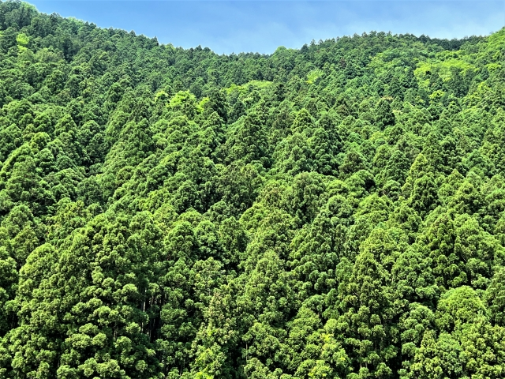

教育と研究で、森の新しい価値を見つける
「自然に触れてほしい」という想いから、地域の学校での出前授業や、都会の親子向けのワークショップを開催しています。自分の手で木に触れ、森の匂いを知ることが、環境を考える第一歩になります。

人間だけでなく、森に住む動物たちにとっても住みやすい環境を作るため、実のなる木や多様な生物を育む「新しい樹木」の研究開発を行っています。森に関わるすべての命が共生できる未来を目指しています。